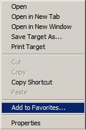
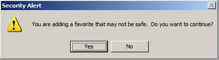
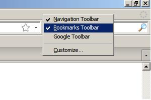

About transliteration
Google Transliteration offers an option for converting English
characters to the characters used in language of your choice. This
lets you type words in your language phonetically in English script and
then have them appear in the language script. This is not the
same as translation - it is the sound of the words that are converted
from one alphabet to the other, not their meaning. For example, typing
"hamesha" transliterates into Hindi as  .
.
.
Saving the transliteration bookmarklet
If you know how to create a bookmarklet, bookmark the link for the
language of your choice :
NOTE: This is NOT same as clicking on the link.
Done! Now whenever you visit a website and want to type in any of these languages, click on the bookmarklet you just created for that language. For more information, see Using the transliteration bookmarklet section.
NOTE: This is NOT same as clicking on the link.
| Amharic | [አ Type in Amharic] |
| Arabic | [ع Type in Arabic] |
| Bengali | [অ Type in Bengali] |
| Greek | [α Type in Greek] |
| Gujarati | [અ Type in Gujarati] |
| Hindi | [अ Type in Hindi] |
| Kannada | [ಅ Type in Kannada] |
| Malayalam | [അ Type in Malayalam] |
| Marathi | [अ Type in Marathi] |
| Nepali | [अ Type in Nepali] |
| Persian | [پ Type in Persian] |
| Punjabi | [ਅ Type in Punjabi] |
| Russian | [Б Type in Russian] |
| Sanskrit | [अ Type in Sanskrit] |
| Serbian | [Ћ Type in Serbian] |
| Tamil | [அ Type in Tamil] |
| Telugu | [అ Type in Telugu] |
| Tigrinya | [ት Type in Tigrinya] |
| Urdu | [آ Type in Urdu] |
Done! Now whenever you visit a website and want to type in any of these languages, click on the bookmarklet you just created for that language. For more information, see Using the transliteration bookmarklet section.
For detailed steps on saving the bookmarklet, use the appropriate link
below. These steps are to be followed only once.
 Steps for Internet Explorer users.
Steps for Internet Explorer users. Steps for Firefox users.
Steps for Firefox users. Steps for Safari users.
Steps for Safari users.Saving transliteration bookmarklet on Internet Explorer
Transliteration bookmarklet is supported on Internet Explorer
version 6 and above. If you come across font issues, see
Transliteration Font guide for possible solutions.
Perform the following steps:
After following the above steps, a bookmark with name [अ Type in Hindi] should appear in the Internet Explorer Links toolbar as follows:
If you do not see the the bookmark, follow these additional steps:
Done! You can now go to Using the transliteration bookmarklet section for details on how to use the bookmarklet.
Perform the following steps:
- Right-click this link: [अ Type in
Hindi].
- Select "Add to Favorites".

- Click "Yes" for the security message shown by Internet
Explorer.

- Choose "Links" as the directory where the bookmarklet should be
created.
- Click "Add".
After following the above steps, a bookmark with name [अ Type in Hindi] should appear in the Internet Explorer Links toolbar as follows:
If you do not see the the bookmark, follow these additional steps:
- Make sure that the Links toolbar is visible. Right-click on
empty space in Internet Explorer toolbar area and confirm that the
Links toolbar is checked:

- Make sure that the toolbars are unlocked. To unlock toolbar,
right-click on empty space in Internet Explorer toolbar area and
uncheck the "Lock the Toolbars" option.

- Drag the Links toolbar to left side. Your toolbar will now look
like:
Done! You can now go to Using the transliteration bookmarklet section for details on how to use the bookmarklet.
Saving transliteration bookmarklet on Firefox
Transliteration bookmarklet is supported on Firefox version 3
and above. If you come across font issues, see Transliteration
Font Guide for possible solutions.
Perform the following steps:
After following the above steps, a bookmark with name [अ Type in Hindi] should appear in the Firefox Bookmark toolbar as follows:
If you do not see the the bookmark, follow this additional step:
Make sure that the Bookmarks toolbar is enabled. Right-click on the empty space next to "Help" menu and click on the "Bookmarks Toolbar" option:
Done! You can now go to Using the transliteration bookmarklet section for details on how to use the bookmarklet.
Perform the following steps:
- Right-click this link: [अ Type in
Hindi].
- Click on "Bookmark This Link".

- Choose "Bookmarks Toolbar" in the "Folder" option.
- Click "Done".
After following the above steps, a bookmark with name [अ Type in Hindi] should appear in the Firefox Bookmark toolbar as follows:
If you do not see the the bookmark, follow this additional step:
Make sure that the Bookmarks toolbar is enabled. Right-click on the empty space next to "Help" menu and click on the "Bookmarks Toolbar" option:

Done! You can now go to Using the transliteration bookmarklet section for details on how to use the bookmarklet.
Saving transliteration bookmarklet on Chrome
Transliteration bookmarklet is supported on Chrome 2. If you
come across font issues, see
Transliteration Font guide for possible solutions.
Perform the following steps:
After following the above steps, a bookmark with name [अ Type in Hindi] should appear in the Chrome Bookmark toolbar as follows:
Done! You can now go to Using the transliteration bookmarklet section for details on how to use the bookmarklet.
Perform the following steps:
- Press Ctrl+B so that the Bookmarks toolbar is always
visible.

- Drag this link: [अ Type in Hindi] to the Bookmarks toolbar.
After following the above steps, a bookmark with name [अ Type in Hindi] should appear in the Chrome Bookmark toolbar as follows:
Done! You can now go to Using the transliteration bookmarklet section for details on how to use the bookmarklet.
Saving transliteration bookmarklet on Safari
Transliteration bookmarklet is supported on Safari 4. If you
come across font issues, see
Transliteration Font Guide for possible solutions.
Perform the following steps:
After following the above steps, a bookmark with name [अ Type in Hindi] should appear in the Safari Bookmark toolbar as follows:
Done! You can now go to Using the transliteration bookmarklet section for details on how to use the bookmarklet.
Perform the following steps:
- Press Ctrl+Shift+B so that the Bookmarks toolbar is always
visible.

- Drag this link [अ Type in Hindi] to the Bookmarks toolbar.
After following the above steps, a bookmark with name [अ Type in Hindi] should appear in the Safari Bookmark toolbar as follows:
Done! You can now go to Using the transliteration bookmarklet section for details on how to use the bookmarklet.
Using the transliteration bookmarklet
To type in Hindi on any website, follow these simple steps:
Here are some places where you can try out Bookmarklets:
Chatting in Tamil in Gmail:
Editing an Arabic Wikipedia article:
- Click on the [अ Type in Hindi]
button in Bookmarks toolbar. Wait till the message "Transliteration
is enabled ..." is displayed. The message informs us that
transliteration is ready to use.
- Click on the input editor where you want to type in Hindi.
You will see a icon in the editor. Now start
typing in English and words will be transliterated to
Hindi.
- To switch off typing in Hindi (i.e. to type in English), click on the [अ Type in Hindi] button in Bookmarks toolbar again.
Here are some places where you can try out Bookmarklets:
Chatting in Tamil in Gmail:
Editing an Arabic Wikipedia article:

Frequently asked questions
- What is a Transliteration bookmarklet ?
Transliteration bookmarklet is a tool that helps you type in your language on any website. The tool uses the Google transliteration service in the background. - Can I use this tool on websites other than Google's ?
Yes. These bookmarklets can enable Typing in your language on any website. - How do I use this tool ?
See the Saving the transliteration bookmarklet and the Using the transliteration bookmarklet sections for detailed information. - Does my system support the bookmarklet tool?
The bookmarklet tool is supported on Internet Explorer 6 and above, Firefox 3 and above, Chrome 2 and Safari. - I created the bookmark but I cannot see it. Why?
Please see the instructions in the Saving the transliteration bookmarklet for steps on creating the bookmarklet and making sure that it is visible. - How do I switch ON transliteration or switch OFF
transliteration?
You can switch ON transliteration by clicking on the bookmark link in the Bookmarks toolbar. You can switch OFF transliteration by clicking the same link again.
For example, to switch ON typing in Amharic, click on [አ Type in Amharic] link in the Bookmarks toolbar. Click on the same link again to switch it OFF.
To type in your language, you must switch ON transliteration and then click on the input editor where you want to type. - How do I know if transliteration is enabled ?
When transliteration is enabled, you will see an enabled icon, like (for Punjabi), when you click on the input editor. If instead you see a disabled icon, like , in the editor, then transliteration is disabled.
You can enable and disable transliteration by clicking on bookmarklet link, like [ਅ Type in Punjabi] bookmarklet in the toolbar. - I cannot see text in supported language, but see empty boxes like
☐ instead - why ?
This usually means that you browser or system does not have font support for your language. See Transliteration Font Guide for more details. - Will transliteration work even without internet
connectivity?
Transliteration requires a live internet connection, as all the transliteration is done on Google's servers and sent back to your browser while you continue typing. If you find that the English words you type are not getting converted to your language, make sure that transliteration is ON and then check your internet connection. - I created the bookmarklet. How can I delete it?
To delete the bookmarklet, right-click on it and select "Delete".
Feedback
To share your thoughts with us, please send them to
transliteration-support+bookmarklets@google.com.